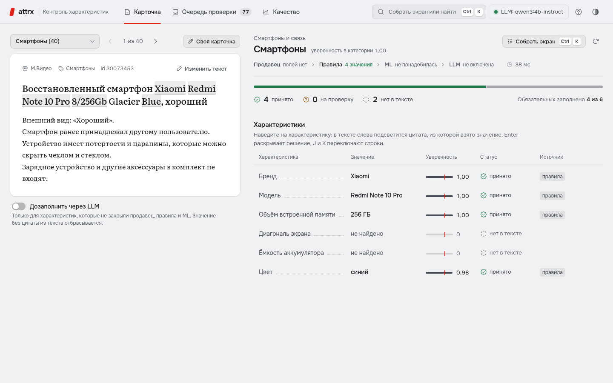
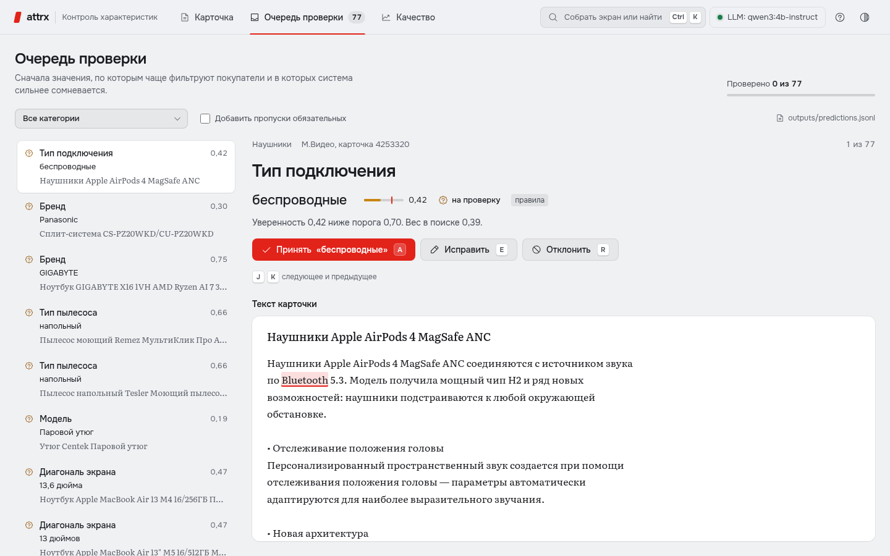
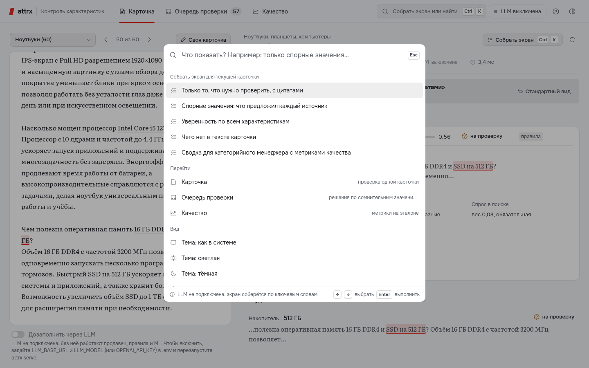

Характеристики товара — из текста карточки. Каждое значение с цитатой и уверенностью
Гибрид для каталога М.Видео: категория по тексту, правила и словари каталога — ядро, NER — свободный текст, LLM — только подсказки модератору. Проверено на всём отложенном holdout: на нём ничего не настраивалось, слабые места раскрыты.
- 0,954
- точность значений, принятых в каталог автоматически95% ДИ от 0,952; принято 94% найденного
- 0,937
- F1 с учётом поискового спросаmicro-F1 0,858; полнота по значениям из текста 0,927
- 97,2%
- поискового спроса с заполненным атрибутомбыло 95,7%: +5 488 значений там, где каталог пуст
- 4–7×
- дешевле, чем «LLM на каждую карточку»гибрид: 0,83 ₽ на своей GPU, 20,6 ₽ в GigaChat Lite за 1000 карточек
Нет характеристики — нет товара в фильтре, а значит и в выручке
Числа у полос — клики по точному запросу. Доли — разметка всех запросов словарём каталога; описательные запросы без значения не засчитаны — оценка снизу.
Деньги: дозаполненная характеристика → больше показов в фильтрах и атрибутной выдаче × CTR × конверсия × средний чек. CTR, конверсия и чек — данные М.Видео; эффект подтверждаем A/B по категориям.
Ядро закрывают дешёвые правила. LLM — только для остатка и только с цитатой
Категория и правила
Без id категорию даёт классификатор: 0,9998 против 0,921 у ключевых слов. Правила и 4 822 бренда каталога: F1 0,853, 1 516 карточек/с на ядро.
NER
ruBERT-tiny2 на значениях каталога, найденных в тексте. Только слабые атрибуты: полнота по извлекаемому 0,918 → 0,927.
LLM
Только слабые и упомянутые в тексте атрибуты — LLM спрашивали для 31% карточек. Одна LLM — только на проверку.
Заземление и порог
Цитата найдена в тексте, значение следует из неё; калиброванный порог 0,70 → точность принятых 0,954.
Модератор видит значение, уверенность и цитату

Карточка. Наведение на характеристику подсвечивает цитату в тексте; уверенность с отметкой порога, статус, источник, другие варианты при конфликте; «Принять / Исправить / Отклонить».

Очередь: первыми — частый спрос и низкая уверенность.

Ctrl/⌘K. Экран под запрос из безопасных компонентов.
Точность принятых 0,954 — на всём holdout, на котором ничего не настраивалось
точность значений, которые attrx принял в каталог сам (цель ≥ 0,95). 95% ДИ от 0,952; принято 94% найденных значений, остальное — модератору с цитатой.
Правила дают ядро, NER — хвост, локальная LLM — ноль к F1
| Подход | P | R | F1 | R по извлек. | F1 по спросу | macro-F1 | Покрытие | На проверку | Карточек/с | LLM на 1000 |
|---|---|---|---|---|---|---|---|---|---|---|
| Весь holdout · 23 391 карточка · основной набор | ||||||||||
| Правила и словари | 0,952 | 0,772 | 0,853 | 0,918 | 0,935 | 0,623 | 72,0% | 11,2% | 1 516 | 0 |
| + атрибуты продавца | 0,953 | 0,771 | 0,853 | 0,917 | 0,935 | 0,624 | 71,9% | 11,4% | 1 454 | 0 |
| + NER — в сдаче | 0,954 | 0,779 | 0,858 | 0,927 | 0,937 | 0,640 | 73,3% | 10,8% | 421 | 0 |
| Стратифицированный набор · 2 416 карточек: все 12 категорий + хвост, как в v1 | ||||||||||
| Правила и словари | 0,961 | 0,742 | 0,837 | 0,921 | 0,935 | 0,630 | 72,4% | 6,8% | 1 235 | 0 |
| + NER | 0,961 | 0,749 | 0,842 | 0,930 | 0,937 | 0,646 | 73,4% | 7,0% | 382 | 0 |
| + NER без id категории (классификатор) | 0,961 | 0,749 | 0,842 | 0,930 | 0,937 | 0,646 | 73,4% | 7,0% | 256 | 0 |
| Подвыборка LLM · 662 карточки, все режимы на одних и тех же карточках | ||||||||||
| + NER | 0,962 | 0,759 | 0,849 | 0,929 | 0,933 | 0,635 | 75,0% | 6,1% | 401 | 0 |
| + LLM (qwen3:4b-instruct) | 0,962 | 0,759 | 0,849 | 0,929 | 0,933 | 0,635 | 75,0% | 6,8% | 1,0 | 310 |
Ядро — 0,9 и выше; низкий F1 там, где значения нет в тексте
| Обязательное поле | F1 | P | в тексте | R по извлек. |
|---|---|---|---|---|
| Смартфон · 381 карточка | ||||
| Бренд | 1,00 | 1,00 | 100% | 1,00 |
| Модель | 1,00 | 1,00 | 96% | 1,00 |
| Память / накопитель | 0,99 | 1,00 | 99% | 0,99 |
| Диагональ | 0,64 | 0,98 | 49% | 0,96 |
| Аккумулятор | 0,65 | 0,96 | 49% | 1,00 |
| Цвет | 0,96 | 0,97 | 96% | 0,98 |
| Ноутбук · 62 карточки | ||||
| Бренд | 0,98 | 0,98 | 100% | 0,98 |
| Процессор | 0,89 | 0,95 | 95% | 0,85 |
| Оперативная память | 0,92 | 0,93 | 95% | 0,95 |
| Память / накопитель | 0,92 | 0,95 | 95% | 0,95 |
| Диагональ | 0,91 | 0,98 | 89% | 0,95 |
| Цвет | 0,90 | 0,96 | 85% | 1,00 |
Диагональ и аккумулятор смартфона есть в тексте у половины карточек: полнота по ним 0,96–1,00, общий F1 ограничен текстом.
Партнёры маркетплейса и редкие категории — на уровне М.Видео и крупных
- 2,0 п.п.разрыв М.Видео и маркетплейса (цель ≤ 5; в базе — 21 п.п.): справочник 4 822 брендов всего каталога одинаково покрывает всех продавцов
- 5,2 п.п.разрыв крупных и редких категорий (цель ≤ 10): у tail точность 0,933 против 0,962, полнота по извлекаемому 0,893 против 0,942
- 0,857 · 0,853 · 0,881короткие, средние и длинные описания; полнота по извлекаемому 0,924 · 0,924 · 0,941
- 0,841 против 0,912новые названия (нет в train, 16 803 карточек) против повторов; полнота по извлекаемому почти та же: 0,922 против 0,941
Точность принятых 0,954 выдержала holdout, но у самого порога уверенность завышена
Слабое место. Принятые значения с уверенностью 0,70–0,80 верны лишь в 57% случаев: 2 008 значений — 4% принятого, но 38% ошибок среди принятого; 91% из них — цвет и модель хвоста. На dev картина та же. Кандидат исправления найден только на dev: калибровка на всём dev → порог 0,82, точность принятых 0,982 при доле автопринятия 85,5% вместо 94%. Не применён: выбор после просмотра holdout нарушил бы протокол; решение — по мониторингу на новых данных.
С локальной 4B-моделью LLM — подсказка модератору, а не автоматический источник
- 31%карточек подвыборки (662), где LLM вообще спросили205 вызовов: только слабые и упомянутые в тексте атрибуты; 969 + 52 токена, 3,3 с на вызов (p95 5,0 с), ошибок 0
- 61ответ без опоры в тексте — отброшен проверкой заземленияцитаты нет в карточке или значение из неё не следует
- 71значение предложила только LLM — ушло модератору, а не в каталогиз них 23 закрывают слот, пустой без LLM
- 38%верны там, где есть эталон (13 из 34)поэтому одна LLM не решает: правило pipeline.UNVERIFIED_ONLY
| Подвыборка, 662 карточки | P | R | F1 |
|---|---|---|---|
| + NER, без LLM | 0,962 | 0,759 | 0,849 |
| + LLM, одна LLM → проверка (в сдаче) | 0,962 | 0,759 | 0,849 |
| + LLM, если принимать одну LLM автоматически | 0,958 | 0,762 | 0,849 |
Вывод. Автопринятие ответов 4B-модели добавило бы 0,003 полноты ценой 0,004 точности каталога. Правила + NER закрывают ядро и хвост; LLM — подсказки модератору с цитатой. Следующий шаг: тот же замер с моделью организаторов на ВМ (make report) и 7–8B в vLLM — порог и правило доверия не меняются.
Гибрид в 4–7 раз дешевле «LLM на каждую карточку», режим в сдаче — почти бесплатен
- Своя GPU (GTX 1060)в 6,7 раза дешевлегибрид: LLM для 31% карточек0,83 ₽LLM на каждую карточку5,62 ₽
- GigaChat Liteв 4,1 раза дешевлегибрид: LLM для 31% карточек20,6 ₽LLM на каждую карточку84,6 ₽
- YandexGPT Liteв 4,1 раза дешевлегибрид: LLM для 31% карточек63,2 ₽LLM на каждую карточку260,2 ₽
| Режим | на карточку | ₽ за 1000 | с LLM |
|---|---|---|---|
| Правила и словари | 0,7 мс | < 0,01 ₽ | 0% |
| + атрибуты продавца | 0,7 мс | < 0,01 ₽ | 0% |
| + NER — в сдаче (GPU) | 2,4 мс | < 0,01 ₽ | 0% |
| + LLM: гибрид, своя GPU | 1,0 с | 0,83 ₽ | 31% |
| LLM на каждую карточку | 6,9 с | 5,62 ₽ | 100% |
Время — медиана 3 замеров на всём holdout. Свой стенд — GTX 1060: 2,93 ₽/ч (амортизация + электричество) × время пайплайна. API — тарифы с НДС на 14.10.2026 и токены замера (969 + 52 на вызов). «LLM на каждую» — бенчмарк attrx llm-bench: все атрибуты, 6,9 с на карточку.
В прод — через тень; каждый риск кейса закрыт мерой и измерен
- 0 · Офлайн-гейтточность принятых ≥ 0,95: на всём holdout 0,954; разрывы 2,0 и 5,2 п.п. — выполнено
- 1 · Тень, 2–4 неделипишем рядом, не в каталог; сверяем с модераторами; слой 0,70–0,80 — на аудит, решаем о новой калибровке
- 2 · Автопринятиевыше порога — в PIM в топ-категориях по трафику; выборочный аудит; точность ниже гейта — категория обратно в тень
- 3 · Все категориихолодный старт: LLM-подсказки на проверку, правки → словари и NER
- ИнтеграцияPOST /api/extract/batch (до 1000) или attrx extract; LLM — vLLM / Ollama в контуре, без VPN
| Риск | Мера в решении | Что показал holdout |
|---|---|---|
| Галлюцинации LLM | схема, справочник, цитата и проверка заземления, калиброванный порог; значение одной LLM — только на проверку | 61 ответ без опоры отброшен; 71 значение одной LLM — модератору (верны 38%) |
| Стоимость на масштабе | LLM только для слабых и упомянутых атрибутов, кэш, лимиты, on-prem | гибрид в 4–7 раз дешевле; режим в сдаче — < 0,01 ₽ за 1000 карточек |
| Оценка не видит хвост | весь holdout, метрики по атрибуту и категории, head / torso / tail, полнота по извлекаемому | tail 0,818, torso 0,844; 77% пропусков — значения нет в тексте |
| Дрейф, новые категории | классификатор категории, generic-схема, таксономия в YAML; attrx monitor: review, missing, PSI категорий → алерт | без category_id категория угадана у всех 2 416 карточек; вне фида 54,3% слотов автоматически |
| Несправедливость к продавцам | справочник брендов всего каталога, метрики по сегментам | маркетплейс 0,853 против 0,873 у М.Видео (было 0,447 против 0,654) |
| Калибровка у порога | нашли сами; аудит слоя 0,70–0,80 в тени; кандидат — калибровка на всём dev (порог 0,82) | слой верен на 57%: 4% принятого, 38% ошибок; весь поток — 0,954 |
Каталог полнее, точность принятого ≥ 0,95, LLM — только под контролем
Что сдано
- Код и пайплайн — пакет attrx, CLI, API, Docker
- README — запуск за 5 минут, матрица «требование → где»
- EDA — notebooks/01_eda.ipynb, docs/EDA.md
- Предсказания по каждой карточке — submission/predictions.*
- Отчёт и метрики — submission/REPORT.md, проверка цифр — make verify
- Презентация — этот файл, docs/slides.pdf
Что получает М.Видео
- 0,954 — точность значений, которые попадают в каталог без человека
- 95,7% → 97,2% — доля спроса с заполненным атрибутом; +5 488 значений на holdout
- 54,3% слотов заполняется автоматически у карточек вне фида (75% каталога)
- 10,8% слотов — модератору, с цитатой и в порядке спроса
- 0,83 ₽ за 1000 карточек с LLM на своей GPU; без LLM — меньше копейки
Следующий шаг
- Пилот в тени на одной категории: смартфоны или телевизоры
- Калибровка: кандидат с dev (порог 0,82, точность принятых 0,982 при 85,5% автопринятия) — включаем по данным тени
- LLM: замер с моделью организаторов на ВМ и 7–8B в vLLM
- От М.Видео: список обязательных атрибутов, CTR / конверсия / чек для A/B, выгрузка правок модераторов, разрешённый LLM-контур